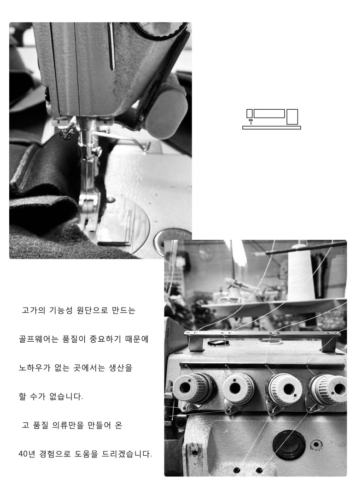

SOUL fACTORY
SOUL TENNIS PROJECT
TENNIS STORY
TENNIS SINGLE
FACTORY

SOUL FACTORY는 골프웨어를 전문적으로 생산하는 제조공장을 바탕으로 고 품질의 테니스웨어를 만들고 있습니다.
Please enable JavaScript to view the
comments powered by Disqus.